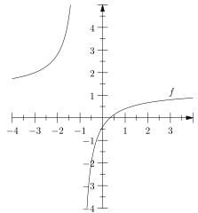
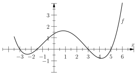
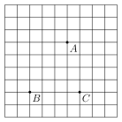

Contrôle
Exercice 1
On considère la fonction \(f\), dont la courbe dans un repère orthonormé est donné sur la figure ci-contre, qui admet pour expression : \[ f(x) = \frac{2,4 x - 0,8}{2 x + 2} \]

- Quel est l'image de \(3\) par la fonction \(f\) ?
- Par lecture graphique, et laissant une trace sur la figure, déterminer les antécédents de \(3\) (il peut y en avoir qu'un seul, voire pas du tout).
- Que se passe-t-il pour \(x = -1\) pour la fonction \(f\) ?
Exercice 2
Sans calculatrice, et en donnant les détails de votre calcul, justifiez pourquoi : \[ \left(\sqrt{10} - \sqrt{3}\right)\left(\sqrt{10} + \sqrt{3}\right) = 7 \]
Exercice 3
On considère la fonction \(f\) dont la représentation graphique est donnée dans la figure suivante.

Donner le tableau de signe de la fonction \(f\).
Exercice 4
On considère les points \(A\), \(B\), \(C\) non alignés comme montrés dans la figure suivante.

- Directement sur l'énoncé, placez les points \(D\) et \(E\) tels que :
- \(\overrightarrow{CD} = - \frac{1}{4} \overrightarrow{CB}\)
- \(\overrightarrow{AE} = \frac{1}{4} \overrightarrow{BA}\)
- Démontrer que \(\overrightarrow{DC} = \frac{1}{4} \overrightarrow{CB}\)
- Démontrer que \(\overrightarrow{DE} = \overrightarrow{DC} + \overrightarrow{CA} + \overrightarrow{AE}\)
- À partir des questions précédentes, démontrer que \[\overrightarrow{DE} = \frac{5}{4} \overrightarrow{CA}\]
- Que peut-on en déduire sur les vecteurs \(\overrightarrow{DE}\) et \(\overrightarrow{CA}\) ?
- Que peut-on en déduire sur les droites \((DE)\) et \((CA)\) ?
- Que peut-on dire du quadrilatère \(ECAD\) ?
- Quel est le taux de l'agrandissement du triangle \(BDE\) par rapport au triangle \(BCA\) ? Vous donnerez ce taux en pourcentage.
Exercice 5
Donner le tableau de signe de la fonction inverse.
Exercice 6
Trois amis comparent leurs salaires.
Alice gagne \(8\%\) de plus que Bob. Bob gagne \(12\%\) de plus que Charlie.
Recopier et compléter les phrases suivantes, en donnant ensuite les détails de vos raisonnements.
Arrondir les résultats à \(0,01\%\) près.
- Alice gagne \(\ldots\) de plus que Charlie.
- Bob gagne \(\ldots\) de moins qu'Alice.
- Charlie gagne \(\ldots\) de moins que Bob.
- Charlie gagne \(\ldots\) de moins qu'Alice.